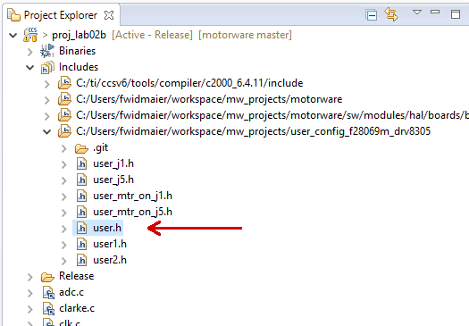
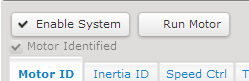

Motor Paramter Identification¶
When getting a new motor, inverter board or encoder, some parameters have to be specified to allow good control. The InstaSPIN package contains procedures to automatically determine these parameters.
The programs for identifying parameters of new hardware are part of the example projects of MotorWare. There are two labs we need, lab02b and lab12a. For more, refer to the “InstaSPIN Projects and Labs User’s Guide” (in MotorWare: Resources > Training: User’s Guides, Labs, Tutorials) for more information.
Note: With the current version (MotorWare 1.01.00.16) the User’s Guide always speaks of writing parameters to user.h. In fact, most parameters are actually stored in the files user_j1.h/user_j5.h (depending on which slot of the LaunchPad you are using). For running the dual_motor_torque_ctrl firmware you’ll need to copy everything to user_mtr_on_j1.h / user_mtr_on_j15.h as well.
Lab 02b: ID motor resistance and inductance¶
Note
In this lab, the motor will
hum at high-frequency for several seconds without spinning
spin for about a minute at different speeds, slowly ramping up and then down
To run the project, follow these steps (assuming, you are using our patched MotorWare version have set up the workspace as described in How to Build and Flash the Firmware).
Connect the motor to the board, make sure it can spin freely.
If not already done, import proj_lab02b into your CCS workspace:
Go to Projects > Import CCS Projects…
Browse for search-directory and go to
your_workspace/motorware/sw/solutions/instaspin_foc/boards/boostxldrv8305_revA/f28x/f2806xF/projects/ccs5/proj_lab02b. proj_lab02b should now appear in the “Discovered projects” box. Make sure it is checked.Do not check “Copy projects into workspace”!
Press “Finish”
Select the correct BoosterPack slot (J1 or J5) in user.h:
The file is found in
Includes > user_config_f28069m_drv8305Right in the beginning (after the includes), there is a line
#define J1 // or J5
Make sure the correct value is set (“J1” if the motor is connected to the upper BoosterPack, “J5” if it is connected to the lower one)
Open either
user_j1.horuser_j5.h, depending on what you set in the previous step and follow the instructions below (taken from the InstaSPIN Projects and Labs User’s Guide):Halfway through the
user_*.hfile, there is a definition of motor parameters. The section of the code starts with the name “USER MOTOR & ID SETTINGS”To define a new motor, add a line with a unique number:
#define MY_MOTOR 123Look for the definition of
USER_MOTORand change it to#define USER_MOTOR MY_MOTORBelow this, there is a
#if/#elif-block that defines the parameters of the motors. Simply add an#elifblock for your motor (assuming you are using a brushless motor):#elif (USER_MOTOR == MY_MOTOR) #define USER_MOTOR_TYPE MOTOR_Type_Pm #define USER_MOTOR_NUM_POLE_PAIRS (4) #define USER_MOTOR_Rr (NULL) #define USER_MOTOR_Rs (NULL) #define USER_MOTOR_Ls_d (NULL) #define USER_MOTOR_Ls_q (NULL) #define USER_MOTOR_RATED_FLUX (NULL) #define USER_MOTOR_MAGNETIZING_CURRENT (NULL) #define USER_MOTOR_RES_EST_CURRENT (1.0) #define USER_MOTOR_IND_EST_CURRENT (-1.0) #define USER_MOTOR_MAX_CURRENT (3.0) #define USER_MOTOR_FLUX_EST_FREQ_Hz (20.0) #define USER_MOTOR_ENCODER_LINES (5000.0)
A few values can already be put into the motor parameters.
USER_MOTOR_TYPE = MOTOR_Type_Pm or MOTOR_Type_Induction. Motor type must be known and entered in this parameter. “Pm” is short for “permanent magnet” and refers to the BLDC motors that are used in the ODRI robots.
USER_MOTOR_NUM_POLE_PAIRS: Number of pole pairs of the motor
USER_MOTOR_MAX_CURRENT: Maximum nameplate current of the motor
Warning
The current is actually not limited by this parameter when using the torque controller! When running the motor, It may be fine to exceed this value for a short time but keep in mind that the motor will overheat very fast.
USER_MOTOR_RES_EST_CURRENT: The motor will have to initially be started in open loop during identification. This value sets the peak of the current used during initial startup of the motor. If the motor has high cogging torque or some kind of load, increase this current value until the motor will start spinning. This value is also used for the motor-encoder-alignment.
USER_MOTOR_IND_EST_CURRENT: Must be zero for ACIM motors. For PMSM motors this value can be set to the negative of the current used for USER_MOTOR_RES_EST_CURRENT.
USER_MOTOR_RATED_FLUX: Must be zero for PMSM motors.
USER_MOTOR_FLUX_EST_FREQ_Hz: A starting point for this frequency if the motor is a PMSM motor is 20.0 Hz, and if it is an ACIM motor, a good starting point is 5.0 Hz.
USER_MOTOR_ENCODER_LINES: Number of lines per revolution of the encoder. Note that this is the raw number of lines, not the result of the quadrature! I.e. an encoder with 5000 lines will actually provide 20k counts due to quadrature.
Note
There is an excel spreadsheet to help setup user.h parameters based on motor parameters, control frequencies, filter poles, etc. It can be found in MotorWare: Resources > Training: User’s Guides, Labs, Tutorials > InstaSPIN Projects Setting User Variables > motorware_selecting_user_variables.xlsx.
Later in the lab after the motor parameters are identified, the appropriate NULL values will be updated with the identified values. One thing to note is that this motor is defined to be a permanent magnet motor. The terms “Magnetizing Current” and “Rr” are not needed for a PM motor model and therefore will always be left NULL. Also note that the inverter has already been defined. In the top half of the user.h file, there are definitions for currents and voltages, clocks and timers, and poles. These definitions are used to setup current, voltage scaling and filter parameters for the library.
If everything is set up in the user files, compile & run the project (see the instructions on How to run a CCS Project on the LaunchPad).
You can use the Single Motor GUI from mw_gui_universal
Open the “Motor ID” tab
Press the buttons “Enable System” and “Run Motor ID” at the top of the window. The motor will now start to make some noises and hopefully spin for a while. Note: don’t worry if it complains about not finding spinTAC stuff, that isn’t used in this lab.
When the process is finished, the motor will automatically stop and the “Motor Identified” checkbox will be checked:
When finished, copy the values of the “Motor Parameters” pane to the
user_j*.h.Important
The
user_j*.hfiles are only used by the single motor applications. As we usually run dual motor applications on the board, make sure you also add the new motor in theuser_mtr_on_j*.hwhich are used by these applications.When adding motors to
user_mtr_on_j5.hmake sure to add the suffix “_2” to all defines.
Lab12a: ID rotor inertia and shaft resistance¶
Note
In this lab the motor will
Spin really fast for about a second
Note
As far as I know, the values determined by this lab are only used by the SpinTAC controllers. If you are not using them (they are not used in the ODRI firmware), they should not be needed.
Follow the same basic procedure as in Lab02b, including the motor ID steps from lab02, and then also activate SpinTAC.VelIdRun.
Do this, everytime the mechanical setup changes (i.e. the mass that is rotated by the motor). Note, however, that this procedure requries the motor to spin freely, so it cannot be done with the leg!
Inverter Board Offsets¶
This should be done whenever a new inverter board is used. Follow the
instructions above for motor parameter identification (make sure you
select the correct inverter board slot (J1 or J5) in user.h). Instead of
the motor parameters (Rs, Ls, …) this time we are interested in the
current and voltage offsets (the values in the “Inverter Offsets” pane).
Copy them to the user_j*.h (these values are defined in the section
“CURRENTS AND VOLTAGES” at the top of the file.
Note
Ideally these offsets should be calibrated for each inverter board individually. However, we are using the same values (determined with one board in the beginning) on all our robots and it seems to be working fine.